import folium
import geopandas as gpd
# Load boundary in WGS84
boundary = gpd.read_file("data/processed/st_thomas_boundary.geojson").to_crs("EPSG:4326")
# Project to a planar CRS (UTM zone 20N) to compute centroid accurately
boundary_proj = boundary.to_crs(epsg=32620)
ctr_proj = boundary_proj.geometry.centroid
# Transform centroid back to WGS84 for map center
ctr_wgs = gpd.GeoSeries(ctr_proj, crs=32620).to_crs(epsg=4326)
center_lat = ctr_wgs.y.mean()
center_lon = ctr_wgs.x.mean()
# Build the Folium map
f = folium.Figure(height=500)
m = folium.Map(location=[center_lat, center_lon], zoom_start=12, control_scale=True).add_to(f)
# Esri Satellite basemap
folium.TileLayer(
tiles='https://server.arcgisonline.com/ArcGIS/rest/services/World_Imagery/MapServer/tile/{z}/{y}/{x}',
attr='Esri',
name='Esri Satellite',
overlay=False,
control=True
).add_to(m)
# Boundary overlay
folium.GeoJson(
boundary.to_json(),
name="Boundary",
style_function=lambda x: {"color": "#DD6F78", "weight": 2, "fill": False},
).add_to(m)
# Layer control
folium.LayerControl().add_to(m)
# Display
m
m.save("vis/stthomas.html")!pip install osmnx
import osmnx as ox
import geopandas as gpd
from pathlib import Path
import matplotlib.pyplot as plt
# Robust make_valid import
try:
from shapely import make_valid
except ImportError:
make_valid = lambda geom: geom.buffer(0)
# Paths and CRS
data_dir = Path("data")
processed = data_dir / "processed"
processed.mkdir(exist_ok=True)
target_crs = "EPSG:3857"Requirement already satisfied: osmnx in d:\pythonanaconda\envs\geospatial\lib\site-packages (1.6.0)
Requirement already satisfied: geopandas>=0.12 in d:\pythonanaconda\envs\geospatial\lib\site-packages (from osmnx) (0.13.2)
Requirement already satisfied: networkx>=2.5 in d:\pythonanaconda\envs\geospatial\lib\site-packages (from osmnx) (3.1)
Requirement already satisfied: numpy>=1.20 in d:\pythonanaconda\envs\geospatial\lib\site-packages (from osmnx) (1.24.4)
Requirement already satisfied: pandas>=1.1 in d:\pythonanaconda\envs\geospatial\lib\site-packages (from osmnx) (1.5.3)
Requirement already satisfied: requests>=2.27 in d:\pythonanaconda\envs\geospatial\lib\site-packages (from osmnx) (2.31.0)
Requirement already satisfied: shapely>=2.0 in d:\pythonanaconda\envs\geospatial\lib\site-packages (from osmnx) (2.0.1)
Requirement already satisfied: fiona>=1.8.19 in d:\pythonanaconda\envs\geospatial\lib\site-packages (from geopandas>=0.12->osmnx) (1.9.4)
Requirement already satisfied: packaging in d:\pythonanaconda\envs\geospatial\lib\site-packages (from geopandas>=0.12->osmnx) (25.0)
Requirement already satisfied: pyproj>=3.0.1 in d:\pythonanaconda\envs\geospatial\lib\site-packages (from geopandas>=0.12->osmnx) (3.6.1)
Requirement already satisfied: python-dateutil>=2.8.1 in d:\pythonanaconda\envs\geospatial\lib\site-packages (from pandas>=1.1->osmnx) (2.9.0.post0)
Requirement already satisfied: pytz>=2020.1 in d:\pythonanaconda\envs\geospatial\lib\site-packages (from pandas>=1.1->osmnx) (2025.2)
Requirement already satisfied: charset-normalizer<4,>=2 in d:\pythonanaconda\envs\geospatial\lib\site-packages (from requests>=2.27->osmnx) (3.4.3)
Requirement already satisfied: idna<4,>=2.5 in d:\pythonanaconda\envs\geospatial\lib\site-packages (from requests>=2.27->osmnx) (3.10)
Requirement already satisfied: urllib3<3,>=1.21.1 in d:\pythonanaconda\envs\geospatial\lib\site-packages (from requests>=2.27->osmnx) (1.26.19)
Requirement already satisfied: certifi>=2017.4.17 in d:\pythonanaconda\envs\geospatial\lib\site-packages (from requests>=2.27->osmnx) (2025.11.12)
Requirement already satisfied: attrs>=19.2.0 in d:\pythonanaconda\envs\geospatial\lib\site-packages (from fiona>=1.8.19->geopandas>=0.12->osmnx) (25.3.0)
Requirement already satisfied: click~=8.0 in d:\pythonanaconda\envs\geospatial\lib\site-packages (from fiona>=1.8.19->geopandas>=0.12->osmnx) (8.2.1)
Requirement already satisfied: click-plugins>=1.0 in d:\pythonanaconda\envs\geospatial\lib\site-packages (from fiona>=1.8.19->geopandas>=0.12->osmnx) (1.1.1.2)
Requirement already satisfied: cligj>=0.5 in d:\pythonanaconda\envs\geospatial\lib\site-packages (from fiona>=1.8.19->geopandas>=0.12->osmnx) (0.7.2)
Requirement already satisfied: six in d:\pythonanaconda\envs\geospatial\lib\site-packages (from fiona>=1.8.19->geopandas>=0.12->osmnx) (1.17.0)
Requirement already satisfied: colorama in d:\pythonanaconda\envs\geospatial\lib\site-packages (from click~=8.0->fiona>=1.8.19->geopandas>=0.12->osmnx) (0.4.6)# Try a few common place strings for St. Thomas
place_candidates = [
"St. Thomas, U.S. Virgin Islands",
"Saint Thomas, U.S. Virgin Islands",
"St Thomas, U.S. Virgin Islands",
]
boundary = None
last_err = None
for place in place_candidates:
try:
gdf = ox.geocode_to_gdf(place)
if not gdf.empty:
gdf["query"] = place
boundary = gdf
break
except Exception as e:
last_err = e
if boundary is None:
raise RuntimeError(f"Failed to fetch boundary. Last error: {last_err}")
# Inspect CRS and basic info
print("Original CRS:", boundary.crs)
display(boundary.head())
# Project to Web Mercator (EPSG:3857)
boundary_3857 = boundary.to_crs(target_crs)
# Plot projected boundary
ax = boundary_3857.plot(facecolor="none", edgecolor="black", figsize=(6, 6))
ax.set_title("St. Thomas Boundary (EPSG:3857)")
ax.set_axis_off()
plt.show()
# Save to processed folder
out_path = processed / "st_thomas_boundary.geojson"
boundary_3857.to_file(out_path, driver="GeoJSON")
print("Saved boundary to:", out_path)Original CRS: epsg:4326| geometry | bbox_north | bbox_south | bbox_east | bbox_west | place_id | osm_type | osm_id | lat | lon | class | type | place_rank | importance | addresstype | name | display_name | query | |
|---|---|---|---|---|---|---|---|---|---|---|---|---|---|---|---|---|---|---|
| 0 | POLYGON ((-65.04213 18.35287, -65.04203 18.352... | 18.383334 | 18.302428 | -64.831785 | -65.042129 | 281792257 | relation | 17825234 | 18.342908 | -64.9189 | place | island | 17 | 0.54065 | island | Saint Thomas | Saint Thomas, Charlotte Amalie, Saint Thomas -... | St. Thomas, U.S. Virgin Islands |
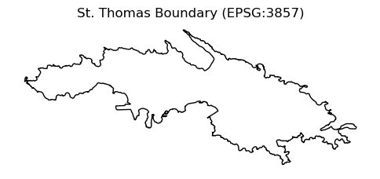
Saved boundary to: data\processed\st_thomas_boundary.geojsonimport geopandas as gpd
from shapely.validation import make_valid
# Load study area boundary and project to analysis CRS
boundary_fp = processed / "st_thomas_boundary.geojson"
# Read raw boundary
boundary = gpd.read_file(boundary_fp)
# Project to target_crs
boundary = boundary.to_crs(target_crs)
# Fix invalid geometries (self-intersections, slivers, etc.)
boundary["geometry"] = boundary.geometry.apply(make_valid)
# Drop empty / null geometries
boundary = boundary[
boundary.geometry.notnull() & ~boundary.geometry.is_empty
]
# Dissolve all parts into a single study-area polygon
boundary["dissolve_id"] = 1 # same value for all rows
boundary_dissolved = boundary.dissolve(by="dissolve_id")
# Single Polygon (or MultiPolygon) object, useful for clip / Pandana bbox
boundary_union = boundary_dissolved.geometry.iloc[0]
boundary_single = gpd.GeoDataFrame(
geometry=[boundary_union],
crs=target_crs
)
print("Boundary rows (raw):", len(boundary))
print("Boundary union type:", boundary_union.geom_type)Boundary rows (raw): 1
Boundary union type: Polygonfrom shapely import make_valid
def safe_make_valid(geom):
if geom is None:
return None
try:
if geom.is_valid:
return geom
return make_valid(geom)
except Exception:
return None
# Define layers to process: input filename -> output filename
layers = {
"USVI_Flood_Zone.geojson": "flood_zone_st_thomas_3857.gpkg",
"USVI_Tsunami.geojson": "tsunami_st_thomas_3857.gpkg",
"USVI_Ghuts.geojson": "ghuts_st_thomas_3857.gpkg",
"LandCover.geojson": "landcover_st_thomas_3857.gpkg",
"BuildingFootprints.geojson": "buildings_st_thomas_3857.gpkg",
"parcel_value.geojson": "parcel_value_st_thomas_3857.gpkg",
}
summary = {}
for fname, outname in layers.items():
fpath = data_dir / fname
gdf = gpd.read_file(fpath)
# If CRS missing, assume WGS84
if gdf.crs is None:
gdf = gdf.set_crs("EPSG:4326")
# Reproject to target CRS
gdf = gdf.to_crs(target_crs)
# Drop null geometries, fix geometries, drop empties
gdf = gdf.dropna(subset=["geometry"]).copy()
gdf["geometry"] = gdf.geometry.apply(safe_make_valid)
gdf = gdf.dropna(subset=["geometry"])
gdf = gdf[~gdf.geometry.is_empty]
# Clip to boundary
clipped = gdf.clip(boundary_union)
clipped = clipped[~clipped.geometry.is_empty]
# Save
out_path = processed / outname
clipped.to_file(out_path, driver="GPKG")
# Record summary
summary[fname] = {
"input_count": len(gdf),
"clipped_count": len(clipped),
"crs": str(gdf.crs),
"output": str(out_path),
"columns": list(clipped.columns),
}
# Preview head and plot
print(f"\n=== {fname} ===")
print(summary[fname])
display(clipped.head())
ax = clipped.plot(figsize=(6, 6), alpha=0.6, edgecolor="k", linewidth=0.2)
boundary.boundary.plot(ax=ax, color="red", linewidth=1)
ax.set_title(f"{fname}")
ax.set_axis_off()
plt.show()
print("\nDone. Summary:")
for k, v in summary.items():
print(k, v)
=== USVI_Flood_Zone.geojson ===
{'input_count': 2556, 'clipped_count': 499, 'crs': 'EPSG:3857', 'output': 'data\\processed\\flood_zone_st_thomas_3857.gpkg', 'columns': ['FID', 'FLD_ZONE', 'ST_BFE_ft', 'V_DATUM', 'FZn_ID', 'Depth_ft', 'ZONE_SUBTY', 'SHAPE_Leng', 'Shape__Are', 'Shape__Len', 'FldZone', 'SqMi', 'Shape__Area', 'Shape__Length', 'geometry']}| FID | FLD_ZONE | ST_BFE_ft | V_DATUM | FZn_ID | Depth_ft | ZONE_SUBTY | SHAPE_Leng | Shape__Are | Shape__Len | FldZone | SqMi | Shape__Area | Shape__Length | geometry | |
|---|---|---|---|---|---|---|---|---|---|---|---|---|---|---|---|
| 670 | 671 | VE | 13 | VIVD09 | 715 | -9999 | NP | 2082.678017 | 1.513524e-06 | 0.005910 | VE | 0.001142 | 2958.866089 | 601.445928 | POLYGON ((-7224535.691 2073895.866, -7224528.0... |
| 697 | 698 | VE | 14 | VIVD09 | 742 | -9999 | NP | 1923.031176 | 1.294365e-06 | 0.005437 | VE | 0.000371 | 961.702705 | 298.784691 | POLYGON ((-7224753.339 2073945.558, -7224750.2... |
| 645 | 646 | VE | 12 | VIVD09 | 690 | -9999 | NP | 1356.843890 | 3.245918e-07 | 0.003876 | VE | 0.001466 | 3798.096886 | 413.566644 | POLYGON ((-7224687.595 2073988.764, -7224677.3... |
| 700 | 701 | VE | 14 | VIVD09 | 745 | -9999 | NP | 3733.978623 | 3.411003e-06 | 0.010518 | VE | 0.001119 | 2898.196648 | 843.660651 | MULTIPOLYGON (((-7224461.817 2073835.215, -722... |
| 698 | 699 | VE | 14 | VIVD09 | 743 | -9999 | NP | 5286.739577 | 8.511948e-06 | 0.015016 | VE | 0.000508 | 1316.357071 | 494.256287 | MULTIPOLYGON (((-7225275.474 2073959.869, -722... |
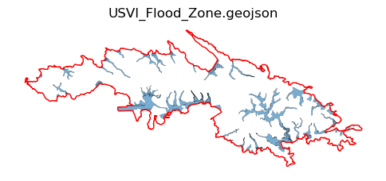
=== USVI_Tsunami.geojson ===
{'input_count': 73, 'clipped_count': 1, 'crs': 'EPSG:3857', 'output': 'data\\processed\\tsunami_st_thomas_3857.gpkg', 'columns': ['FID', 'Id', 'Shape__Area', 'Shape__Length', 'geometry']}| FID | Id | Shape__Area | Shape__Length | geometry | |
|---|---|---|---|---|---|
| 21 | 22 | 0 | 1.082695e+07 | 217385.934245 | MULTIPOLYGON (((-7226335.668 2074755.905, -722... |
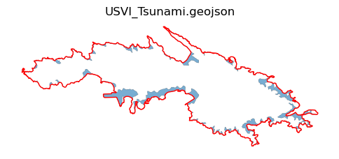
=== USVI_Ghuts.geojson ===
{'input_count': 448, 'clipped_count': 115, 'crs': 'EPSG:3857', 'output': 'data\\processed\\ghuts_st_thomas_3857.gpkg', 'columns': ['FID', 'FNODE_', 'TNODE_', 'LPOLY_', 'RPOLY_', 'LENGTH', 'STREAMS_', 'STREAMS_ID', 'Island', 'Shape__Length', 'geometry']}| FID | FNODE_ | TNODE_ | LPOLY_ | RPOLY_ | LENGTH | STREAMS_ | STREAMS_ID | Island | Shape__Length | geometry | |
|---|---|---|---|---|---|---|---|---|---|---|---|
| 101 | 102 | 0 | 0 | 0 | 0 | 0.0 | 0 | 0 | 249.451041 | LINESTRING (-7224823.497 2074305.375, -7224933... | |
| 99 | 100 | 0 | 0 | 0 | 0 | 0.0 | 0 | 0 | 425.691525 | LINESTRING (-7223893.550 2074548.622, -7223888... | |
| 102 | 103 | 0 | 0 | 0 | 0 | 0.0 | 0 | 0 | 269.437508 | LINESTRING (-7225779.508 2074776.958, -7225913... | |
| 148 | 149 | 0 | 0 | 0 | 0 | 0.0 | 0 | 0 | 614.123222 | LINESTRING (-7223042.216 2075060.981, -7223040... | |
| 105 | 106 | 0 | 0 | 0 | 0 | 0.0 | 0 | 0 | 511.166993 | LINESTRING (-7225742.494 2075059.382, -7225772... |
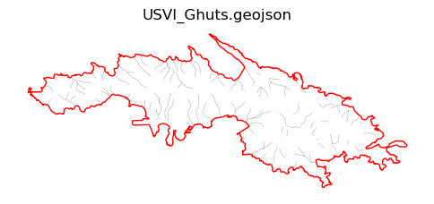
=== LandCover.geojson ===
{'input_count': 5620, 'clipped_count': 1952, 'crs': 'EPSG:3857', 'output': 'data\\processed\\landcover_st_thomas_3857.gpkg', 'columns': ['FID', 'OBJECTID', 'class', 'ORIG_FID', 'area', 'SHAPE_Leng', 'Shape__Area', 'Shape__Length', 'geometry']}| FID | OBJECTID | class | ORIG_FID | area | SHAPE_Leng | Shape__Area | Shape__Length | geometry | |
|---|---|---|---|---|---|---|---|---|---|
| 5240 | 5241 | 5241 | Shrub | 12 | 0.031451 | 92.578198 | 281.942528 | 87.561300 | POLYGON ((-7224357.564 2073958.991, -7224357.5... |
| 3746 | 3747 | 3747 | Forest | 8 | 0.008975 | 46.019746 | 80.457115 | 43.590177 | POLYGON ((-7224615.736 2073975.853, -7224630.5... |
| 5394 | 5395 | 5395 | Water | 13 | 0.012628 | 70.897217 | 113.198509 | 67.288714 | MULTIPOLYGON (((-7224003.406 2074057.871, -722... |
| 3748 | 3749 | 3749 | Forest | 8 | 0.028330 | 74.348617 | 253.959190 | 70.390788 | POLYGON ((-7224048.090 2074067.091, -7224069.4... |
| 5395 | 5396 | 5396 | Water | 13 | 0.005737 | 37.745166 | 51.429977 | 35.767834 | POLYGON ((-7223953.476 2074081.683, -7223953.5... |
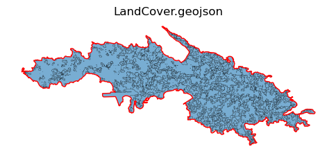
=== BuildingFootprints.geojson ===
{'input_count': 44710, 'clipped_count': 16004, 'crs': 'EPSG:3857', 'output': 'data\\processed\\buildings_st_thomas_3857.gpkg', 'columns': ['FID', 'Class', 'Confidence', 'ORIG_OID', 'STATUS', 'Shape__Area', 'Shape__Length', 'geometry']}| FID | Class | Confidence | ORIG_OID | STATUS | Shape__Area | Shape__Length | geometry | |
|---|---|---|---|---|---|---|---|---|
| 5247 | 5248 | 0.0 | 0 | 0 | 214.084778 | 63.633547 | POLYGON ((-7222789.340 2074812.204, -7222791.5... | |
| 5406 | 5407 | 0.0 | 0 | 0 | 270.323380 | 73.532001 | POLYGON ((-7223064.401 2074235.599, -7223079.2... | |
| 5394 | 5395 | 0.0 | 0 | 0 | 76.485504 | 36.766046 | POLYGON ((-7223145.843 2074313.638, -7223133.2... | |
| 5389 | 5390 | 0.0 | 0 | 0 | 69.986320 | 36.058936 | POLYGON ((-7223130.951 2074330.540, -7223131.6... | |
| 5395 | 5396 | 0.0 | 0 | 0 | 140.973251 | 49.492848 | POLYGON ((-7222931.932 2074336.211, -7222920.2... |
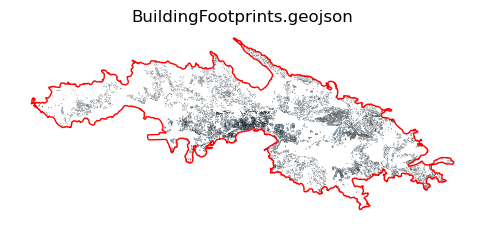
=== parcel_value.geojson ===
{'input_count': 24091, 'clipped_count': 23610, 'crs': 'EPSG:3857', 'output': 'data\\processed\\parcel_value_st_thomas_3857.gpkg', 'columns': ['DPNR_ZONE', 'PARCEL_NO', 'MAP', 'PARCEL_NAM', 'ACRE', 'LONGITUDE', 'LATITUDE', 'OBJECTID_1', 'PARCEL_NO_', 'Tax_Legal_', 'Name', 'Address', 'City', 'State', 'Zip', 'Country', 'Land_Value', 'Improved_V', 'created_us', 'created_da', 'last_edite', 'last_edi_1', 'SHAPE_Leng', 'SHAPE_Area', 'geometry']}| DPNR_ZONE | PARCEL_NO | MAP | PARCEL_NAM | ACRE | LONGITUDE | LATITUDE | OBJECTID_1 | PARCEL_NO_ | Tax_Legal_ | ... | Country | Land_Value | Improved_V | created_us | created_da | last_edite | last_edi_1 | SHAPE_Leng | SHAPE_Area | geometry | |
|---|---|---|---|---|---|---|---|---|---|---|---|---|---|---|---|---|---|---|---|---|---|
| 1673 | R-1 | 109701010800 | D9-8000-T007 | 8-12 | .90 | -64.845454 | 18.311844 | 42255 | 109701010800 | 8-12&8-13 ESTATE NAZARETH 1 RED HOOK | ... | United States | 575500 | 102000 | NaN | NaN | NaN | NaN | 327.389648 | 3024.317162 | POLYGON ((-7218569.618 2074067.181, -7218572.8... |
| 1672 | R-1 | 109701010800 | D9-8000-T007 | 8-13 | .72 | -64.845681 | 18.312024 | 42255 | 109701010800 | 8-12&8-13 ESTATE NAZARETH 1 RED HOOK | ... | United States | 575500 | 102000 | NaN | NaN | NaN | NaN | 236.365302 | 2395.937798 | POLYGON ((-7218623.569 2074080.214, -7218624.7... |
| 1482 | R-1 | 109701010700 | A9-35-T65 | 8-14 | NaN | -64.845879 | 18.312255 | 42254 | 109701010700 | 8-14 ESTATE NAZARETH RED HOOK QTR | ... | United States | 541000 | 1200000 | NaN | NaN | NaN | NaN | 192.280658 | 1924.277732 | POLYGON ((-7218589.954 2074123.106, -7218624.7... |
| 1480 | R-1 | 109701011000 | A3-35-T65 | 8-11 | NaN | -64.845177 | 18.312358 | 42256 | 109701011000 | 8-11 ESTATE NAZARETH No.1 RED HOOK QTR. | ... | United States | 399200 | 1309700 | NaN | NaN | NaN | NaN | 224.985190 | 2455.835935 | POLYGON ((-7218510.139 2074140.062, -7218512.6... |
| 1478 | R-1 | 109701010600 | NaN | NaN | NaN | -64.846262 | 18.312598 | 42253 | 109701010600 | 8-15 ESTATE NAZARETH RED HOOK QTR | ... | United States | 485700 | 695700 | NaN | NaN | NaN | NaN | 230.324864 | 1535.526928 | POLYGON ((-7218626.461 2074150.406, -7218629.8... |
5 rows × 25 columns
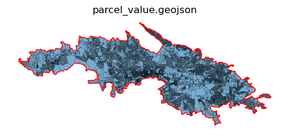
Done. Summary:
USVI_Flood_Zone.geojson {'input_count': 2556, 'clipped_count': 499, 'crs': 'EPSG:3857', 'output': 'data\\processed\\flood_zone_st_thomas_3857.gpkg', 'columns': ['FID', 'FLD_ZONE', 'ST_BFE_ft', 'V_DATUM', 'FZn_ID', 'Depth_ft', 'ZONE_SUBTY', 'SHAPE_Leng', 'Shape__Are', 'Shape__Len', 'FldZone', 'SqMi', 'Shape__Area', 'Shape__Length', 'geometry']}
USVI_Tsunami.geojson {'input_count': 73, 'clipped_count': 1, 'crs': 'EPSG:3857', 'output': 'data\\processed\\tsunami_st_thomas_3857.gpkg', 'columns': ['FID', 'Id', 'Shape__Area', 'Shape__Length', 'geometry']}
USVI_Ghuts.geojson {'input_count': 448, 'clipped_count': 115, 'crs': 'EPSG:3857', 'output': 'data\\processed\\ghuts_st_thomas_3857.gpkg', 'columns': ['FID', 'FNODE_', 'TNODE_', 'LPOLY_', 'RPOLY_', 'LENGTH', 'STREAMS_', 'STREAMS_ID', 'Island', 'Shape__Length', 'geometry']}
LandCover.geojson {'input_count': 5620, 'clipped_count': 1952, 'crs': 'EPSG:3857', 'output': 'data\\processed\\landcover_st_thomas_3857.gpkg', 'columns': ['FID', 'OBJECTID', 'class', 'ORIG_FID', 'area', 'SHAPE_Leng', 'Shape__Area', 'Shape__Length', 'geometry']}
BuildingFootprints.geojson {'input_count': 44710, 'clipped_count': 16004, 'crs': 'EPSG:3857', 'output': 'data\\processed\\buildings_st_thomas_3857.gpkg', 'columns': ['FID', 'Class', 'Confidence', 'ORIG_OID', 'STATUS', 'Shape__Area', 'Shape__Length', 'geometry']}
parcel_value.geojson {'input_count': 24091, 'clipped_count': 23610, 'crs': 'EPSG:3857', 'output': 'data\\processed\\parcel_value_st_thomas_3857.gpkg', 'columns': ['DPNR_ZONE', 'PARCEL_NO', 'MAP', 'PARCEL_NAM', 'ACRE', 'LONGITUDE', 'LATITUDE', 'OBJECTID_1', 'PARCEL_NO_', 'Tax_Legal_', 'Name', 'Address', 'City', 'State', 'Zip', 'Country', 'Land_Value', 'Improved_V', 'created_us', 'created_da', 'last_edite', 'last_edi_1', 'SHAPE_Leng', 'SHAPE_Area', 'geometry']}from matplotlib import patches as mpatches
# Preview head and plot
print(f"\n=== {fname} ===")
print(summary[fname])
display(clipped.head())
fig, ax = plt.subplots(figsize=(8, 10))
boundary.boundary.plot(ax=ax, color="black", linewidth=1, label="Boundary")
clipped.plot(
ax=ax,
color="#4c72b0",
alpha=0.6,
edgecolor="white",
linewidth=0.3,
label=f"{fname} (clipped)",
)
ax.set_title(f"{fname} (clipped preview)")
ax.set_axis_off()
legend_patches = [
mpatches.Patch(facecolor="#4c72b0", edgecolor="white", label=f"{fname} (clipped)"),
mpatches.Patch(facecolor="none", edgecolor="black", label="Boundary"),
]
ax.legend(handles=legend_patches, loc="lower left")
plt.tight_layout()
plt.show()
=== parcel_value.geojson ===
{'input_count': 24091, 'clipped_count': 23610, 'crs': 'EPSG:3857', 'output': 'data\\processed\\parcel_value_st_thomas_3857.gpkg', 'columns': ['DPNR_ZONE', 'PARCEL_NO', 'MAP', 'PARCEL_NAM', 'ACRE', 'LONGITUDE', 'LATITUDE', 'OBJECTID_1', 'PARCEL_NO_', 'Tax_Legal_', 'Name', 'Address', 'City', 'State', 'Zip', 'Country', 'Land_Value', 'Improved_V', 'created_us', 'created_da', 'last_edite', 'last_edi_1', 'SHAPE_Leng', 'SHAPE_Area', 'geometry']}| DPNR_ZONE | PARCEL_NO | MAP | PARCEL_NAM | ACRE | LONGITUDE | LATITUDE | OBJECTID_1 | PARCEL_NO_ | Tax_Legal_ | ... | Country | Land_Value | Improved_V | created_us | created_da | last_edite | last_edi_1 | SHAPE_Leng | SHAPE_Area | geometry | |
|---|---|---|---|---|---|---|---|---|---|---|---|---|---|---|---|---|---|---|---|---|---|
| 1673 | R-1 | 109701010800 | D9-8000-T007 | 8-12 | .90 | -64.845454 | 18.311844 | 42255 | 109701010800 | 8-12&8-13 ESTATE NAZARETH 1 RED HOOK | ... | United States | 575500 | 102000 | NaN | NaN | NaN | NaN | 327.389648 | 3024.317162 | POLYGON ((-7218569.618 2074067.181, -7218572.8... |
| 1672 | R-1 | 109701010800 | D9-8000-T007 | 8-13 | .72 | -64.845681 | 18.312024 | 42255 | 109701010800 | 8-12&8-13 ESTATE NAZARETH 1 RED HOOK | ... | United States | 575500 | 102000 | NaN | NaN | NaN | NaN | 236.365302 | 2395.937798 | POLYGON ((-7218623.569 2074080.214, -7218624.7... |
| 1482 | R-1 | 109701010700 | A9-35-T65 | 8-14 | NaN | -64.845879 | 18.312255 | 42254 | 109701010700 | 8-14 ESTATE NAZARETH RED HOOK QTR | ... | United States | 541000 | 1200000 | NaN | NaN | NaN | NaN | 192.280658 | 1924.277732 | POLYGON ((-7218589.954 2074123.106, -7218624.7... |
| 1480 | R-1 | 109701011000 | A3-35-T65 | 8-11 | NaN | -64.845177 | 18.312358 | 42256 | 109701011000 | 8-11 ESTATE NAZARETH No.1 RED HOOK QTR. | ... | United States | 399200 | 1309700 | NaN | NaN | NaN | NaN | 224.985190 | 2455.835935 | POLYGON ((-7218510.139 2074140.062, -7218512.6... |
| 1478 | R-1 | 109701010600 | NaN | NaN | NaN | -64.846262 | 18.312598 | 42253 | 109701010600 | 8-15 ESTATE NAZARETH RED HOOK QTR | ... | United States | 485700 | 695700 | NaN | NaN | NaN | NaN | 230.324864 | 1535.526928 | POLYGON ((-7218626.461 2074150.406, -7218629.8... |
5 rows × 25 columns
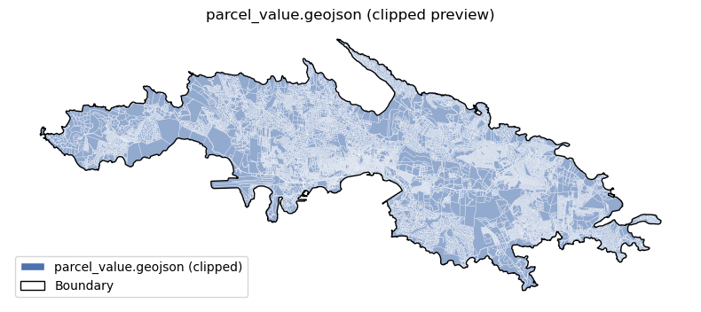
!pip install rasterio
import numpy as np
import geopandas as gpd
import matplotlib.pyplot as plt
from pathlib import Path
from shapely import make_valid
import rasterio
from rasterio import merge
from rasterio.mask import mask
from rasterio.warp import calculate_default_transform, reproject, Resampling
from rasterio.features import rasterize
from scipy.ndimage import distance_transform_edtRequirement already satisfied: rasterio in d:\pythonanaconda\envs\geospatial\lib\site-packages (1.3.8)
Requirement already satisfied: affine in d:\pythonanaconda\envs\geospatial\lib\site-packages (from rasterio) (2.4.0)
Requirement already satisfied: attrs in d:\pythonanaconda\envs\geospatial\lib\site-packages (from rasterio) (25.3.0)
Requirement already satisfied: certifi in d:\pythonanaconda\envs\geospatial\lib\site-packages (from rasterio) (2025.11.12)
Requirement already satisfied: click>=4.0 in d:\pythonanaconda\envs\geospatial\lib\site-packages (from rasterio) (8.2.1)
Requirement already satisfied: cligj>=0.5 in d:\pythonanaconda\envs\geospatial\lib\site-packages (from rasterio) (0.7.2)
Requirement already satisfied: numpy>=1.18 in d:\pythonanaconda\envs\geospatial\lib\site-packages (from rasterio) (1.24.4)
Requirement already satisfied: snuggs>=1.4.1 in d:\pythonanaconda\envs\geospatial\lib\site-packages (from rasterio) (1.4.7)
Requirement already satisfied: click-plugins in d:\pythonanaconda\envs\geospatial\lib\site-packages (from rasterio) (1.1.1.2)
Requirement already satisfied: setuptools in d:\pythonanaconda\envs\geospatial\lib\site-packages (from rasterio) (80.9.0)
Requirement already satisfied: colorama in d:\pythonanaconda\envs\geospatial\lib\site-packages (from click>=4.0->rasterio) (0.4.6)
Requirement already satisfied: pyparsing>=2.1.6 in d:\pythonanaconda\envs\geospatial\lib\site-packages (from snuggs>=1.4.1->rasterio) (3.0.9)# Paths/CRS
data_dir = Path("data")
dem_dir = data_dir / "USVI-St Thomas dem"
processed = data_dir / "processed"
processed.mkdir(exist_ok=True)
target_crs = "EPSG:3857"
# Ghuts (processed vector)
ghuts = gpd.read_file(processed / "ghuts_st_thomas_3857.gpkg").to_crs(target_crs)
ghuts["geometry"] = ghuts.geometry.apply(make_valid)
ghuts = ghuts[~ghuts.geometry.is_empty]# Reproject DEM to EPSG:3857
src_dem_path = data_dir / "USVI_DEM.tif"
with rasterio.open(src_dem_path) as src:
dst_transform, dst_width, dst_height = calculate_default_transform(
src.crs, target_crs, src.width, src.height, *src.bounds
)
dst_meta = src.meta.copy()
dst_meta.update({
"crs": target_crs,
"transform": dst_transform,
"width": dst_width,
"height": dst_height,
"nodata": src.nodata,
})
dem_reproj_path = processed / "dem_3857.tif"
with rasterio.open(dem_reproj_path, "w", **dst_meta) as dst:
for i in range(1, src.count + 1):
reproject(
source=rasterio.band(src, i),
destination=rasterio.band(dst, i),
src_transform=src.transform,
src_crs=src.crs,
dst_transform=dst_transform,
dst_crs=target_crs,
resampling=Resampling.bilinear,
)
print("Saved reprojected DEM:", dem_reproj_path)Saved reprojected DEM: data\processed\dem_3857.tif# Clip DEM to boundary
with rasterio.open(dem_reproj_path) as src:
dem_clip, dem_clip_transform = mask(
src, [boundary_union], crop=True, all_touched=True, filled=False
)
dem_clip_meta = src.meta.copy()
dem_clip_meta.update({
"height": dem_clip.shape[1],
"width": dem_clip.shape[2],
"transform": dem_clip_transform,
})
dem_clip_path = processed / "dem_st_thomas_3857.tif"
with rasterio.open(dem_clip_path, "w", **dem_clip_meta) as dst:
dst.write(dem_clip)
print("Saved clipped DEM:", dem_clip_path)Saved clipped DEM: data\processed\dem_st_thomas_3857.tifimport numpy as np
# Preview clipped DEM
dem_data = dem_clip[0]
fig, ax = plt.subplots(figsize=(8, 6))
left = dem_clip_transform.c
top = dem_clip_transform.f
right = left + dem_clip.shape[2] * dem_clip_transform.a
bottom = top + dem_clip.shape[1] * dem_clip_transform.e
img = ax.imshow(
dem_data,
extent=(left, right, bottom, top),
cmap="terrain",
origin="upper"
)
boundary.boundary.plot(ax=ax, color="red", linewidth=1)
ax.set_title("DEM (clipped to St. Thomas)")
ax.set_axis_off()
plt.colorbar(img, ax=ax, shrink=0.7)
plt.show()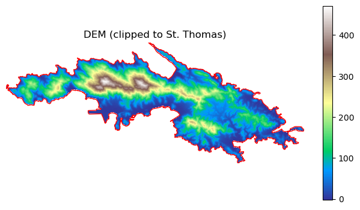
# Slope (degrees)
with rasterio.open(dem_clip_path) as src:
dem = src.read(1).astype("float32")
transform = src.transform
nodata = src.nodata
px = transform.a
py = -transform.e
dy, dx = np.gradient(dem, py, px)
slope_rad = np.arctan(np.sqrt(dx**2 + dy**2))
slope_deg = np.degrees(slope_rad)
if nodata is not None:
slope_deg[dem == nodata] = np.nan
slope_meta = dem_clip_meta.copy()
slope_meta.update({"dtype": "float32", "count": 1, "nodata": np.nan})
slope_path = processed / "slope_degrees_3857.tif"
with rasterio.open(slope_path, "w", **slope_meta) as dst:
dst.write(slope_deg.astype("float32"), 1)
print("Saved slope raster:", slope_path)Saved slope raster: data\processed\slope_degrees_3857.tif# Ghut distance (meters) on DEM grid
with rasterio.open(dem_clip_path) as src:
out_shape = (src.height, src.width)
out_transform = src.transform
ghut_mask = rasterize(
[(geom, 1) for geom in ghuts.geometry],
out_shape=out_shape,
transform=out_transform,
fill=0,
dtype="uint8",
all_touched=True,
)
dist_pixels = distance_transform_edt(ghut_mask == 0)
pixel_size = (abs(out_transform.a) + abs(out_transform.e)) / 2.0
dist_meters = dist_pixels * pixel_size
# Clamp to 0–1000 m
dist_meters = np.clip(dist_meters, 0, 1000)
# Classify into 200 m bins (0-200-400-600-800-1000)
# bins = [0, 200, 400, 600, 800, 1000]
# dist_binned = np.digitize(dist_meters, bins, right=True)
dist_meta = dem_clip_meta.copy()
dist_meta.update({"dtype": "float32", "count": 1, "nodata": np.nan})
dist_path = processed / "ghut_distance_m_3857.tif"
with rasterio.open(dist_path, "w", **dist_meta) as dst:
dst.write(dist_meters.astype("float32"), 1)
print("Saved ghut distance raster:", dist_path)Saved ghut distance raster: data\processed\ghut_distance_m_3857.tif# Quick previews
def plot_raster(path, title, cmap="terrain", vmin=None, vmax=None):
with rasterio.open(path) as src:
arr = src.read(1)
extent = (src.bounds.left, src.bounds.right, src.bounds.bottom, src.bounds.top)
fig, ax = plt.subplots(figsize=(8, 6))
img = ax.imshow(arr, extent=extent, origin="upper", cmap=cmap, vmin=vmin, vmax=vmax)
boundary.boundary.plot(ax=ax, color="red", linewidth=1)
ax.set_title(title)
ax.set_axis_off()
plt.colorbar(img, ax=ax, shrink=0.7)
plt.show()
plot_raster(slope_path, "Slope (degrees)", cmap="viridis", vmin=0, vmax=60)
plot_raster(dist_path, "Distance to Ghuts (m)", cmap="magma")
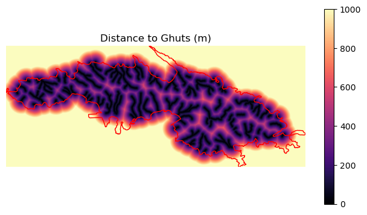
import osmnx as ox
import geopandas as gpd
from shapely import make_valid
import matplotlib.pyplot as plt
target_crs = "EPSG:3857"
# Boundary to WGS84 for OSM, then project roads back to target CRS
boundary_wgs_poly = gpd.GeoSeries([boundary_union], crs=boundary.crs).to_crs(4326).iloc[0]
G = ox.graph_from_polygon(boundary_wgs_poly, network_type="drive")
G = ox.project_graph(G, to_crs=target_crs)
# Extract edges, fix geometry, clip to boundary
edges = ox.graph_to_gdfs(G, nodes=False, edges=True)
edges["geometry"] = edges.geometry.apply(make_valid)
edges = edges[~edges.geometry.is_empty]
roads_clipped = edges.clip(boundary_union)
roads_clipped = roads_clipped[~roads_clipped.geometry.is_empty].reset_index(drop=True)
# Keep only a few safe fields; convert object/list/dict to string
allowed_cols = ["highway", "name", "length", "oneway", "geometry"]
roads_clipped = roads_clipped[[c for c in allowed_cols if c in roads_clipped.columns]].copy()
for col in roads_clipped.columns:
if roads_clipped[col].dtype == object:
roads_clipped[col] = roads_clipped[col].apply(
lambda v: str(v) if isinstance(v, (list, dict)) else v
)
# Save
roads_out = processed / "roads_st_thomas_3857.gpkg"
roads_clipped.to_file(roads_out, driver="GPKG")
print(f"\n=== OSM Roads ===")
print(f"edges in graph: {len(edges)}, clipped: {len(roads_clipped)}")
print(f"output: {roads_out}")
display(roads_clipped.head())
# Preview
ax = roads_clipped.plot(figsize=(6, 6), linewidth=0.5, color="dimgray")
boundary.boundary.plot(ax=ax, color="red", linewidth=1)
ax.set_title("OSM Roads (clipped)")
ax.set_axis_off()
plt.show()
=== OSM Roads ===
edges in graph: 5526, clipped: 5526
output: data\processed\roads_st_thomas_3857.gpkg| highway | name | length | oneway | geometry | |
|---|---|---|---|---|---|
| 0 | residential | NaN | 1142.816 | False | LINESTRING (-7221794.547 2073225.892, -7221936... |
| 1 | residential | NaN | 1142.816 | False | LINESTRING (-7222431.840 2073836.435, -7222423... |
| 2 | trunk | Nicholas "Nick" Friday Memorial Drive | 762.867 | False | LINESTRING (-7221993.274 2075018.761, -7221986... |
| 3 | trunk | Nicholas "Nick" Friday Memorial Drive | 762.867 | False | LINESTRING (-7221590.364 2074955.005, -7221589... |
| 4 | residential | Nadir Hill Road | 476.211 | False | LINESTRING (-7221953.155 2075028.974, -7221933... |
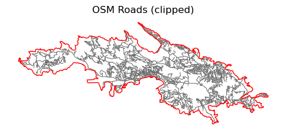
from shapely import make_valid
# Load and project
shelters = gpd.read_file(data_dir / "Shelter.geojson").to_crs(target_crs)
shelters["geometry"] = shelters.geometry.apply(make_valid)
shelters = shelters[~shelters.geometry.is_empty]
# Clip to boundary (boundary/ boundary_union already in target_crs)
shelters = gpd.clip(shelters, boundary_union)
shelters = shelters[~shelters.geometry.is_empty]
# IDs/names
if "shelter_id" not in shelters.columns:
shelters["shelter_id"] = shelters.index.astype(str)
if "name" not in shelters.columns:
shelters["name"] = shelters.index.astype(str)
print("Shelters after clip:", shelters.shape)
shelters.head()Shelters after clip: (6, 8)| FID | Name | Latitude | Longitude | Island | geometry | shelter_id | name | |
|---|---|---|---|---|---|---|---|---|
| 5 | 5 | Bertha B. Boschulte School | 18.317206 | -64.891119 | St.Thomas | POINT (-7223646.324 2074710.573) | 5 | 5 |
| 0 | 0 | Sugar Estate Head Start Center | 18.339801 | -64.920562 | St.Thomas | POINT (-7226923.904 2077360.258) | 0 | 0 |
| 1 | 1 | Community Health Clinic at Schneider | 18.340168 | -64.914869 | St.Thomas | POINT (-7226290.162 2077403.298) | 1 | 1 |
| 4 | 4 | Charlotte Amalie High School Auditorium | 18.341186 | -64.919949 | St.Thomas | POINT (-7226855.665 2077522.686) | 4 | 4 |
| 2 | 2 | Lockhart Elementary | 18.341674 | -64.916455 | St.Thomas | POINT (-7226466.715 2077579.917) | 2 | 2 |
import osmnx as ox
import geopandas as gpd
from shapely import make_valid
import matplotlib.pyplot as plt
target_crs = "EPSG:3857"
# 1) Boundary to WGS84 for OSM, then project roads back to target CRS
boundary_wgs_poly = gpd.GeoSeries([boundary_union], crs=boundary.crs).to_crs(4326).iloc[0]
G = ox.graph_from_polygon(boundary_wgs_poly, network_type="drive")
G = ox.project_graph(G, to_crs=target_crs)
# 2) Extract edges, fix geometry, clip to boundary
edges = ox.graph_to_gdfs(G, nodes=False, edges=True)
edges["geometry"] = edges.geometry.apply(make_valid)
edges = edges[~edges.geometry.is_empty]
roads_clipped = edges.clip(boundary_union)
roads_clipped = roads_clipped[~roads_clipped.geometry.is_empty].reset_index(drop=True)
# 3) Keep only writable fields; convert list/dict to string
allowed_cols = ["highway", "name", "length", "oneway", "geometry"]
roads_clipped = roads_clipped[[c for c in allowed_cols if c in roads_clipped.columns]].copy()
for col in roads_clipped.columns:
if roads_clipped[col].dtype == object:
roads_clipped[col] = roads_clipped[col].apply(
lambda v: str(v) if isinstance(v, (list, dict)) else v
)
# 4) Save
roads_out = processed / "roads_st_thomas_3857.gpkg"
roads_clipped.to_file(roads_out, driver="GPKG")
print(f"\n=== OSM Roads ===")
print(f"edges in graph: {len(edges)}, clipped: {len(roads_clipped)}")
print(f"output: {roads_out}")
display(roads_clipped.head())
# 5) Preview
ax = roads_clipped.plot(figsize=(6, 6), linewidth=0.5, color="dimgray")
boundary.boundary.plot(ax=ax, color="red", linewidth=1)
ax.set_title("OSM Roads (clipped)")
ax.set_axis_off()
plt.show()
=== OSM Roads ===
edges in graph: 5526, clipped: 5526
output: data\processed\roads_st_thomas_3857.gpkg| highway | name | length | oneway | geometry | |
|---|---|---|---|---|---|
| 0 | residential | NaN | 1142.816 | False | LINESTRING (-7221794.547 2073225.892, -7221936... |
| 1 | residential | NaN | 1142.816 | False | LINESTRING (-7222431.840 2073836.435, -7222423... |
| 2 | trunk | Nicholas "Nick" Friday Memorial Drive | 762.867 | False | LINESTRING (-7221993.274 2075018.761, -7221986... |
| 3 | trunk | Nicholas "Nick" Friday Memorial Drive | 762.867 | False | LINESTRING (-7221590.364 2074955.005, -7221589... |
| 4 | residential | Nadir Hill Road | 476.211 | False | LINESTRING (-7221953.155 2075028.974, -7221933... |

import math
from pathlib import Path
import numpy as np
import matplotlib.pyplot as plt
import geopandas as gpd
import rasterio
from shapely import make_valid
images_dir = Path("images")
images_dir.mkdir(exist_ok=True)
# Paths
data_dir = Path("data")
processed = data_dir / "processed"
target_crs = "EPSG:3857"
# Load boundary
boundary = gpd.read_file(processed / "st_thomas_boundary.geojson").to_crs(target_crs)
boundary_union = boundary.unary_union
# Load and clip shelters
shelters = gpd.read_file(data_dir / "Shelter.geojson").to_crs(target_crs)
shelters["geometry"] = shelters.geometry.apply(make_valid)
shelters = shelters[~shelters.geometry.is_empty]
shelters = gpd.clip(shelters, boundary_union)
shelters = shelters[~shelters.geometry.is_empty]
if "shelter_id" not in shelters.columns:
shelters["shelter_id"] = shelters.index.astype(str)
if "name" not in shelters.columns:
shelters["name"] = shelters.index.astype(str)
# Vector layers and titles (including roads)
vector_layers = [
("flood_zone_st_thomas_3857.gpkg", "St Thomas_Flood_Zone"),
("tsunami_st_thomas_3857.gpkg", "St Thomas_Tsunam_Zone"),
("ghuts_st_thomas_3857.gpkg", "St Thomas_Ghuts"),
("landcover_st_thomas_3857.gpkg", "St Thomas_LandCover"),
("buildings_st_thomas_3857.gpkg", "St Thomas_BuildingFootprints"),
("parcel_value_st_thomas_3857.gpkg", "St Thomas_Parcel_Value"),
("roads_st_thomas_3857.gpkg", "St Thomas_Road"),
]
# Raster layers and titles
raster_layers = [
(processed / "dem_st_thomas_3857.tif", "St Thomas_DEM", "terrain", None, None),
(processed / "slope_degrees_3857.tif", "St Thomas_Slope (degrees)", "viridis", 0, 60),
(processed / "ghut_distance_m_3857.tif", "St Thomas_Distance_to_Ghuts","magma", None, None),
]
# Total plots and layout (+1 for shelters)
n_plots = len(vector_layers) + len(raster_layers) + 1
n_cols = 3
n_rows = math.ceil(n_plots / n_cols)
fig, axes = plt.subplots(n_rows, n_cols, figsize=(6 * n_cols, 4.5 * n_rows))
axes = axes.ravel()
# Plot vectors
for ax, (fname, title) in zip(axes, vector_layers):
gdf = gpd.read_file(processed / fname).to_crs(target_crs)
gdf["geometry"] = gdf.geometry.apply(make_valid)
gdf = gdf[~gdf.geometry.is_empty]
gdf.clip(boundary_union).plot(ax=ax, alpha=0.6, edgecolor="k", linewidth=0.2)
boundary.boundary.plot(ax=ax, color="red", linewidth=1)
ax.set_title(title, fontsize=11)
ax.set_axis_off()
# Plot shelters
ax_idx = len(vector_layers)
ax = axes[ax_idx]
shelters.plot(ax=ax, color="red", markersize=10, label="Shelters")
boundary.boundary.plot(ax=ax, color="red", linewidth=1)
ax.set_title("St Thomas_Shelter", fontsize=11)
ax.set_axis_off()
# Plot rasters (DEM uses percentile stretch)
for ax, (rpath, title, cmap, vmin, vmax) in zip(axes[ax_idx + 1:], raster_layers):
with rasterio.open(rpath) as src:
arr = src.read(1).astype("float32")
extent = (src.bounds.left, src.bounds.right, src.bounds.bottom, src.bounds.top)
nd = src.nodata
if nd is not None:
arr[arr == nd] = np.nan
arr[~np.isfinite(arr)] = np.nan
# DEM: apply percentile stretch
if "DEM" in title:
vmin = np.nanpercentile(arr, 1)
vmax = np.nanpercentile(arr, 99)
img = ax.imshow(arr, extent=extent, origin="upper", cmap=cmap, vmin=vmin, vmax=vmax)
boundary.boundary.plot(ax=ax, color="red", linewidth=1)
ax.set_title(title, fontsize=11)
ax.set_axis_off()
fig.colorbar(img, ax=ax, shrink=0.6)
# Hide any unused axes
for ax in axes[n_plots:]:
ax.axis("off")
plt.tight_layout()
out_path = images_dir / "datasource.png"
plt.savefig(out_path, dpi=300, bbox_inches="tight")
print(f"Saved plot to {out_path}")Saved plot to images\datasource.png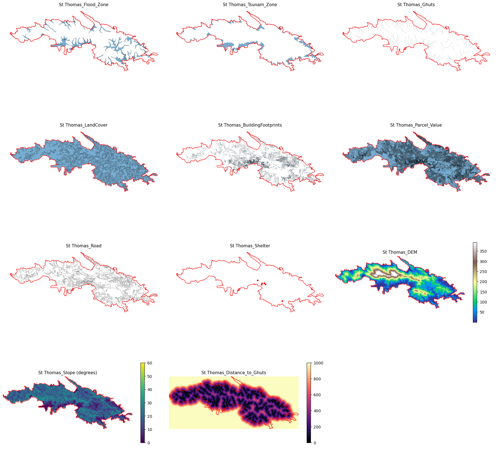